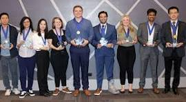

History of Techcon
SRC has a rich history of success. Since 1982, SRC has funded more than $2.5B in research, built a semiconductor workforce by sponsoring more than 16,000 graduate students, and provided over 890 patents to member companies.
For almost 40 years, SRC and its members have assembled the best university researchers while educating an elite workforce of talented graduate students—in science, engineering, and technology. SRC graduates accrue a competitive advantage over their non-SRC counterparts, and SRC member organizations secure early access to an expanding set of solutions addressing their deepest technical challenges.


Mission
SRC is a world-renowned, high technology-based consortium that serves as a crossroads of collaboration between technology companies, academia, government agencies, and SRC’s highly regarded engineers and scientists. Through its interdisciplinary research programs, SRC plays an indispensable role in addressing global challenges, using research and development strategies, and advanced tools and technologies. Members of SRC work synergistically together, gain access to research results, fundamental IP, and highly experienced students to compete in the global marketplace and build the workforce of tomorrow.
Past Speakers
Jane Doe
Jane is a renowned AI researcher whose work in ethical machine learning has influenced both academia and industry. She inspired attendees with her talk on building transparent AI systems.
John Smith
John is a leading expert in cybersecurity and has advised governments and tech firms globally. His keynote at TechCon 2022 focused on the future of digital privacy.
Maria Chen
Maria is the founder of CloudNext, a startup that revolutionized scalable cloud infrastructure. Her insights at TechCon 2021 highlighted the importance of open-source collaboration.